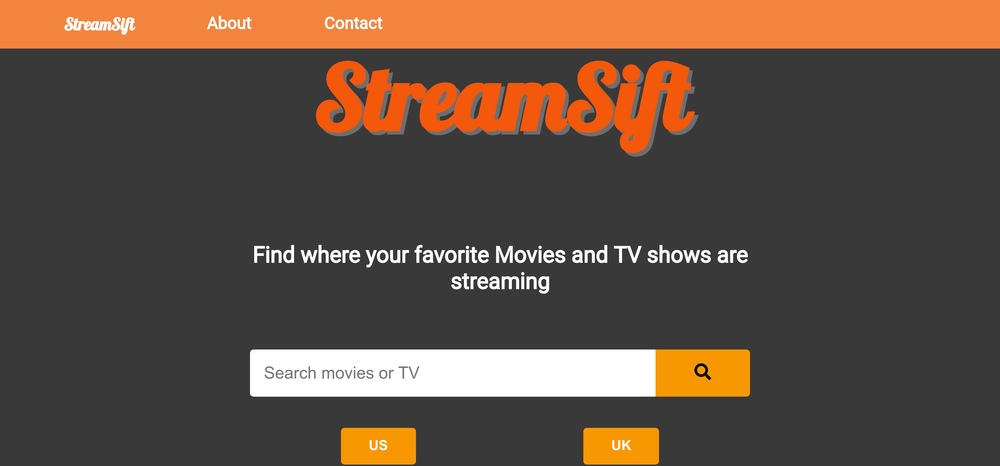
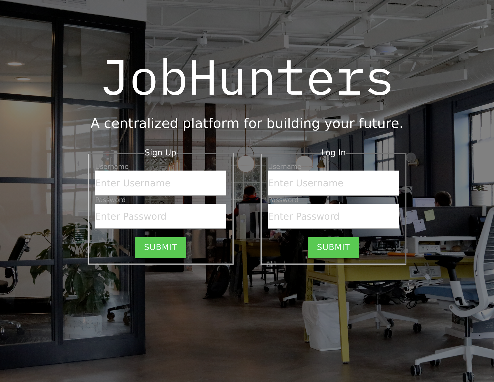
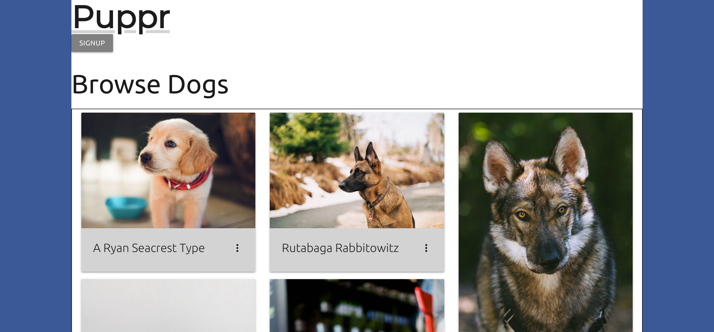

Hello there! My name is Deva Kothandapany. About a year ago, I was researching programs for a Master's in Bioinformatics. During that time, I discovered Python and with it, a passion for programming. After that, I decided to make the switch from pursuing a Master's to starting a career in programming!
I've recently completed General Assembly's Software Engineering Immersive Bootcamp; a three month long course designed build skills in programming, web development, and computer science. My current goal is to continue building projects in order to learn and hone my skills.
When I'm not coding, I enjoy keeping myself active through going to the gym, training Brazilian Jiujitsu, and coaching people on how to throw an axe. Ask me about how I got a blind woman to hit a bullseye!
My Projects
StreamSift

Web application that allows users to search for where movies and TV shows are currently streaming - User search queries Utelly API and results are rendered dynamically to browser via jQuery. Technologies: Javascript, jQuery, Utelly API, HTML5, CSS3
Sensei YouTube
A full CRUD app that allows users to add, watch, and comment on Jiujitsu videos found on YouTube. Authorization set up to allow users to create accounts with password encryption in order to leave comments on videos. Implemented RESTful backend server that allows users to favorite videos and save them to their account. Technologies: Javascript, jQuery, Express, MongoDB, Mongoose, Heroku, Materialize CSS
JobHunters

A group project built for users to log in and save jobs that they find interesting. Users can selet whether or not they have applied to the job after adding it to their profile. Technologies: React, Express, MongoDB, Mongoose, Heroku, Materialize CSS
Puppr

Final project for General Assembly's Software Engineering Immersive bootcamp. App built for users to create profiles of their dogs and find other dogs in their area for play-dates. User authentication and authorization configured with a full back-end. Technologies: React, Ruby on Rails, PostgreSQL, Heroku, Materialize CSS